WHO AM I?
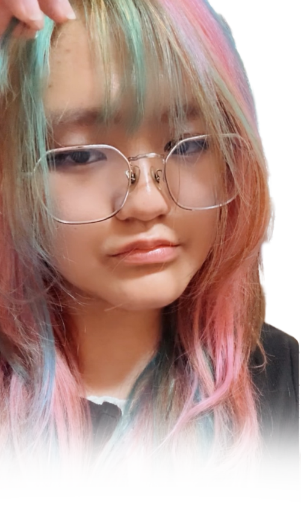
Hello!
My name is Jolin, I am 23 as of 2026!
I currently study at Nanyang Polytechnic.
I'm a year 3, studying game development and technology!

My name is Jolin, I am 23 as of 2026!
I currently study at Nanyang Polytechnic.
I'm a year 3, studying game development and technology!
I have a lot of hobbies that I enjoy.
I do these to pass time or give to friends as gifts.
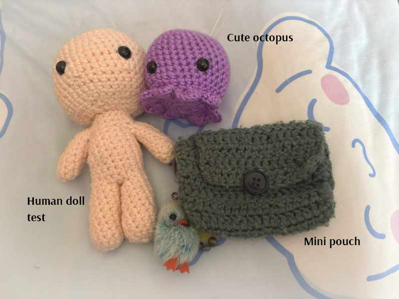
I enjoy making plushies and bags like these, either as gifts or for personal use.
I've been crocheting for a few years when I came across some yarn in a daiso. From there, my love for creating grew.
ps: Click on the image to view a bigger picture :D
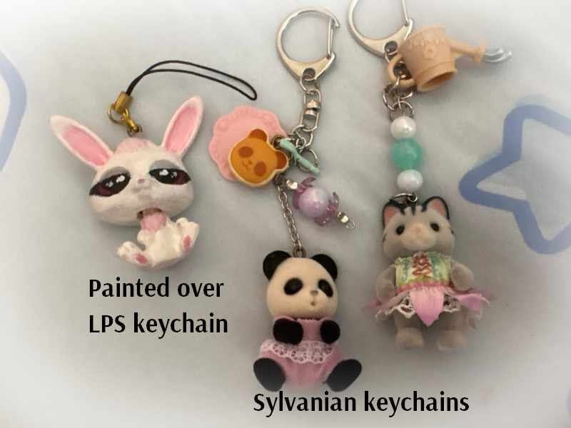
I got into making keychains for fun recently, enjoying the aesthetic and appeal to tiny crafts.
Taking a childhood toy and turning them into something anyone can use has a special value to it, rather than letting it sit on my shelves.
I loved drawing since I was a kid, it was an outlet for me to unleash my creativity.
Now that I'm older, I've been able to use my skills to make my own art assets in games.
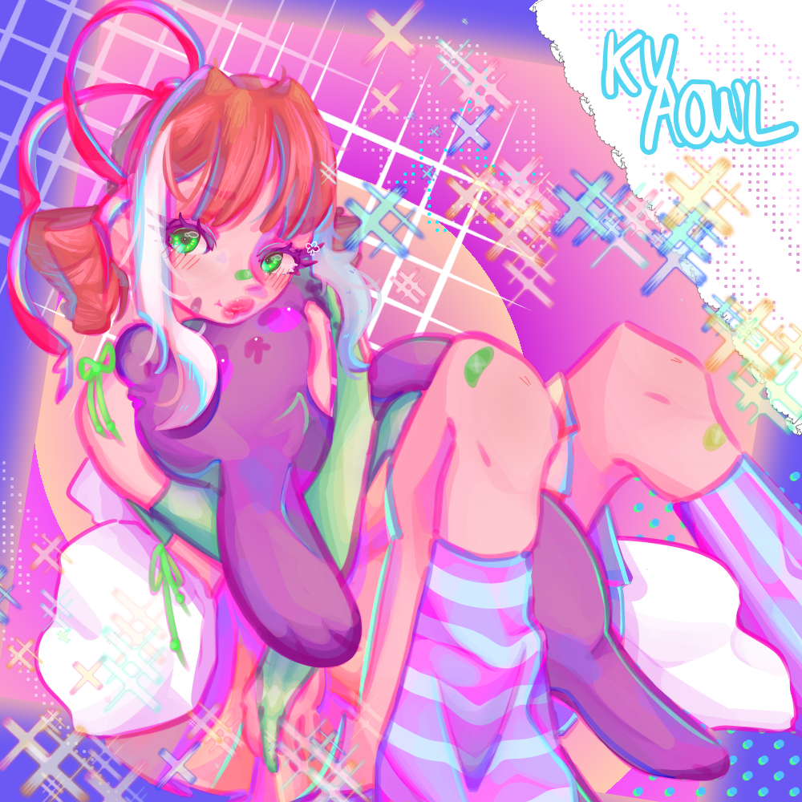
Original Character art
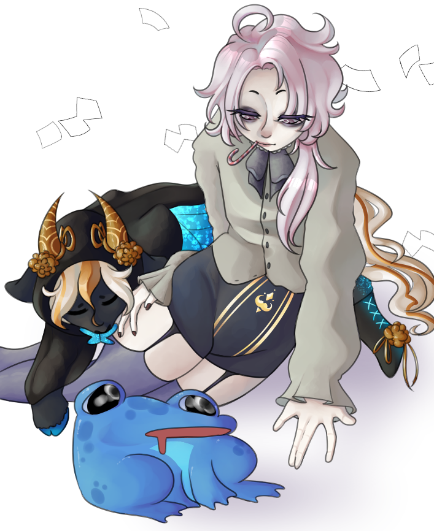
Fanart of my character in Goatlings
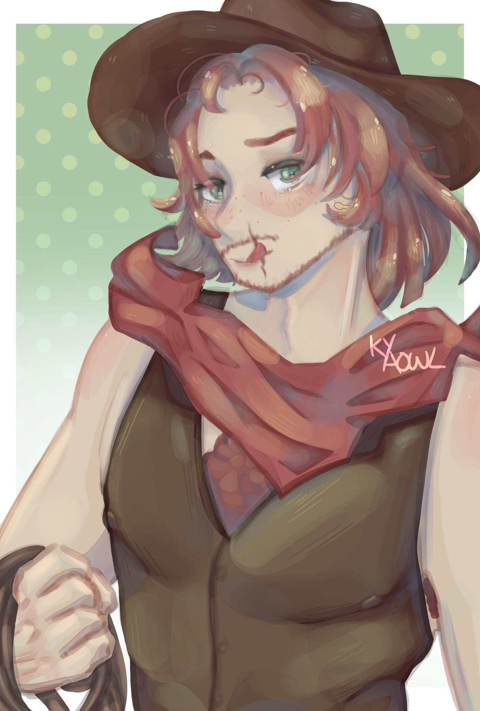
Original Character art
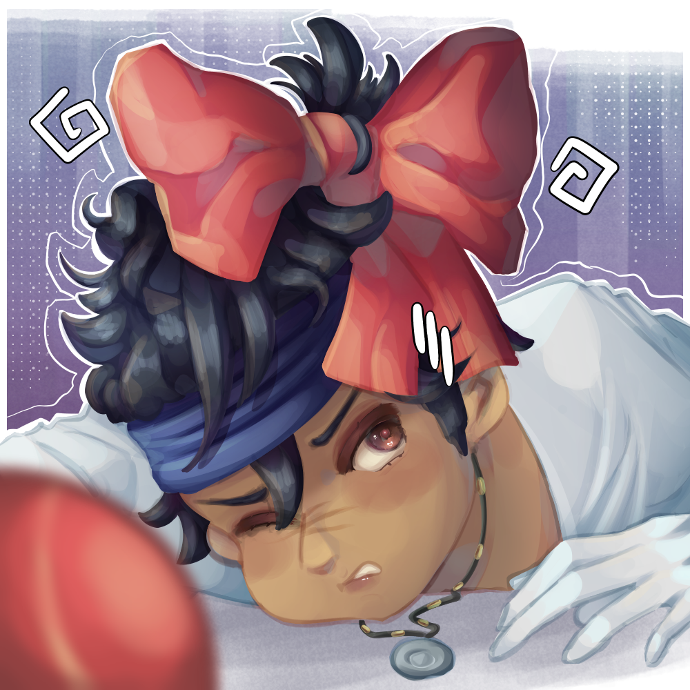
Fanart for Identity V

Fanart for Katana Zero
I recently started to pick up music. I also do play the guitar, though I'm rusty.
I enjoy putting in my emotions into music.
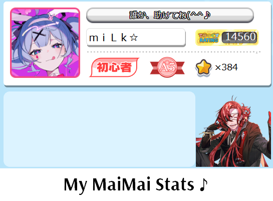
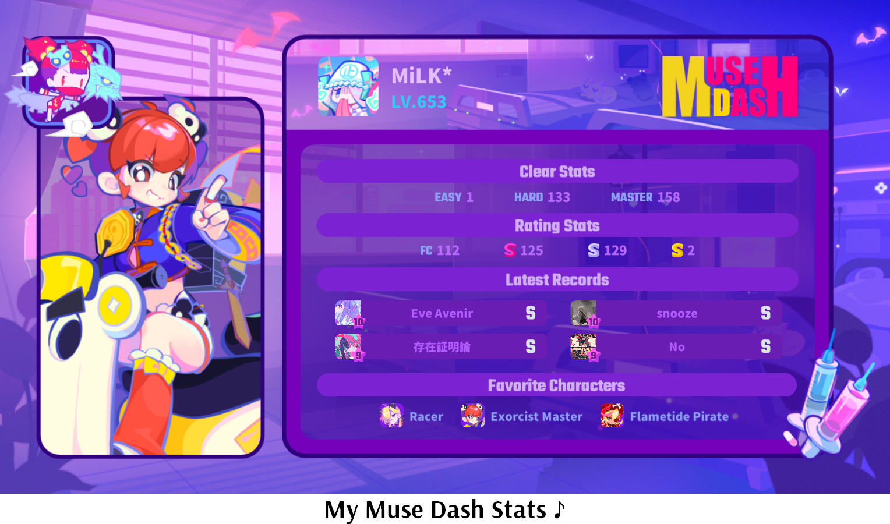
I play a lot of games, though my interest falls towards rhythm.
I enjoy rhythm games a lot, ranging from the arcade game called "Maimai" to "Muse Dash".
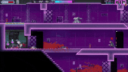
I also do enjoy Katana Zero a lot. The story is amazing, it hooked me instantly, and the artstyle was what drew me in initially. The gameplay mechanic was so addictive, easy one tap kill to both sides, and it forces me to strategise.

I love playing asymmetrical games like Identity V and dead by daylight! I put more hours into IDV.
It all began during primary school.
I was a quiet kid and I found joy in playing games and socialising online,
or during free time in club activities where I got to try out online games with friends in infocomm.
This was wear I joined robotics and tried to go for competitions.
Though I didn't win anything, I learnt a lot through experiences.
Then one day, our teachers spoke about an open class in ITE for secondary students to try out game development.
So I signed up.


These were the games we made during the week.
I was then selected to go for
ITE's competition and won second place :D
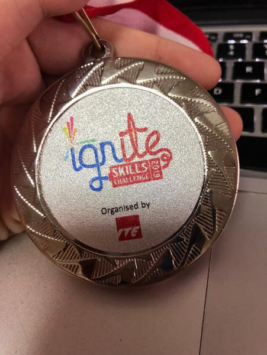
My life made a massive change when I stepped into Institute of Technical Education,
and I started with Nitec Digital Animation.
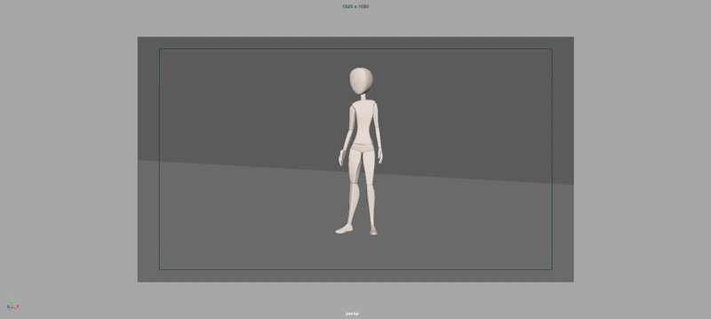
I worked hard in my two years of Nitec and found that my true passion shifted to Game development.
So, I decided to pursue my passion and applied EAE to both Nanyang Polytechnic and Higher Nitec.
This video above is my final storyboarding assignments.
For one of our first few practices, we learnt topology, UV mapping, texturing, and understanding Maya as a whole application.
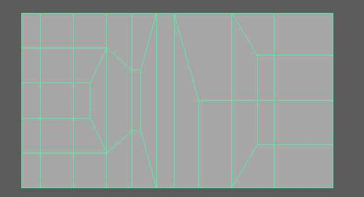
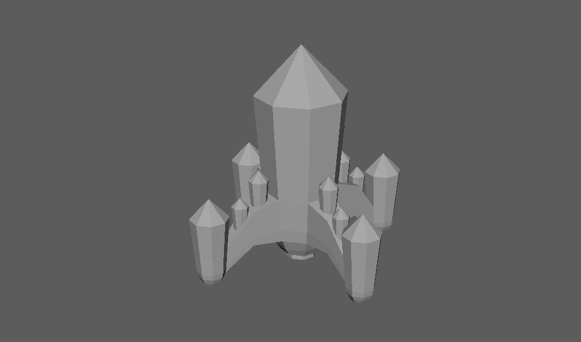
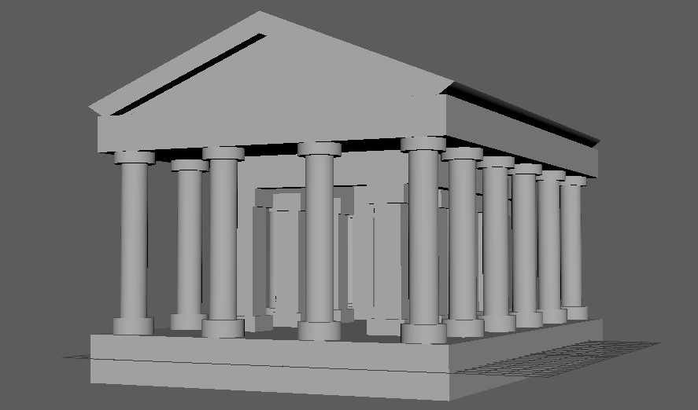
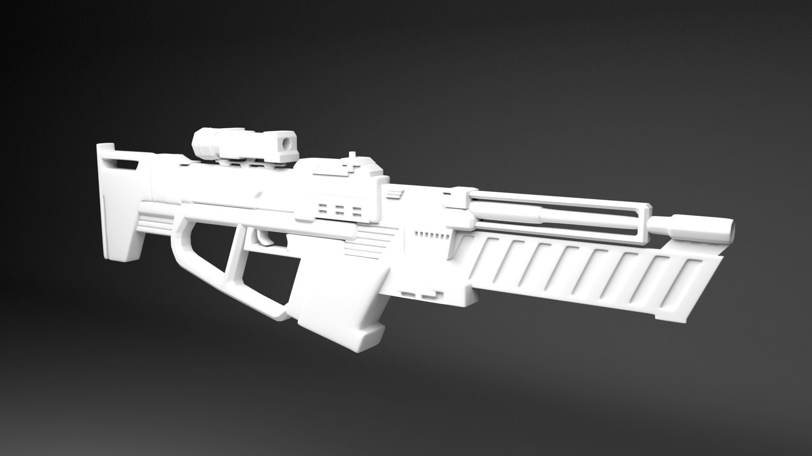
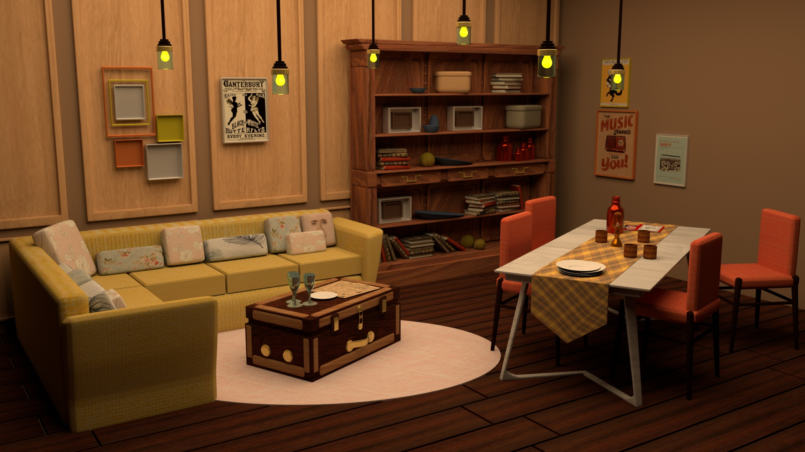
After graduating from animation, I went on to study higher nitec game development and technology.
We had continued to do more projects on Construct3, but more focused on designing the game.
We wrote Game design documents, and kept improving ourselves.
On the side, we started to learn C# and Unity.
After graduating, I got into NYP through DAE.
Despite the course being one of the more demanding courses offered, I pushed through.
I knew this was exactly what I wanted to do in my future.
We learnt a lot.
Even though I had practically forgotten my mathematics in secondary school,
I proved to everyone else I can do it.

This is my second assignment in Computer Graphic Programming.
These videos are my assignments for Physics Programming.
In this module, we did both 2D and 3D level designing. We learnt how to guide players without breaking immersion or having too much guidance.
2D Level analysis Document 3D Level analysis documentIn this module, we learnt our teacher's framework and made a game with his guidance.
This module taught us how to program AI in a way that balances the entire game.
This assignment focuses more on tile to tile movement, like a 'maze'.
AI asg1 DocumentThese are some of my projects I created for my assignments.
All the assets (besides sound effects) are by me!
This module taught us how to write our own shaders.
This module focuses on coding for multiplayer games in unity.
We learnt how to make our own websites from scratch using HTML, js, and css.
For my assignment, I wanted to spread awareness about pigeon history.
WIU is a module that gives us 2 weeks maximum to finish an entire game project in a team of 4.
This game showcases a few minigames and is story driven. This theme was about Singapore.
The trailer above is another WIU project with the theme of 'boss',
and I was tasked to work on the entire boss level and fixing models.
We found models online, and I had to custom rig the godzilla alone since
mixamo wouldn't work on it.
This win ending is also my creation.
It's more comedic, we wanted to earn a few laughs from our supervisors.
2 of my friends and I have made plans on small game projects
that we all can work together on whenever we are free. Here are some examples.
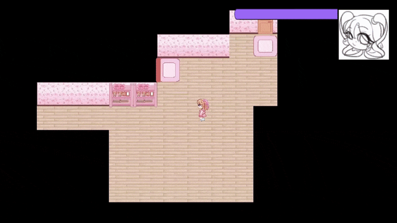
A RPG psychological horror game. It's about 2 friends, one of them is a popular influencer who is keeping the other incredibly sick for her own benefit.
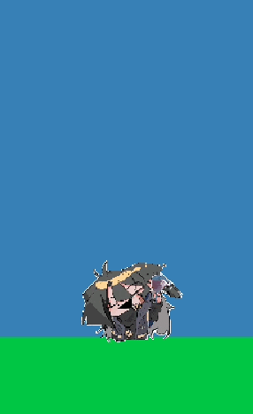
This is more of a test. Its for artists to commission me to create their original character as a little 'pet simulator'.
This is also a test. I wanted to put myself out there for others to commission me to make a doll of their original character,
this was just a different idea I had for a pet simulator.
This particular project was done on GoDot on my android tablet, still a WIP.
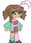
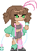
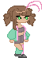
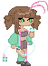
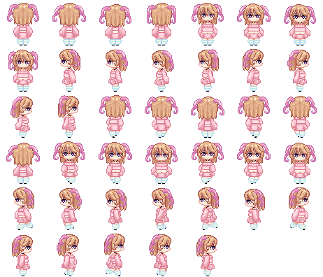
Every art asset and animation seen in these games are created by me.
I enjoy creating my own assets, it pushes me to my limits.
Since we are relatively a small group with all of us being busy with school,
we decide to only work on these when we're all on holidays.
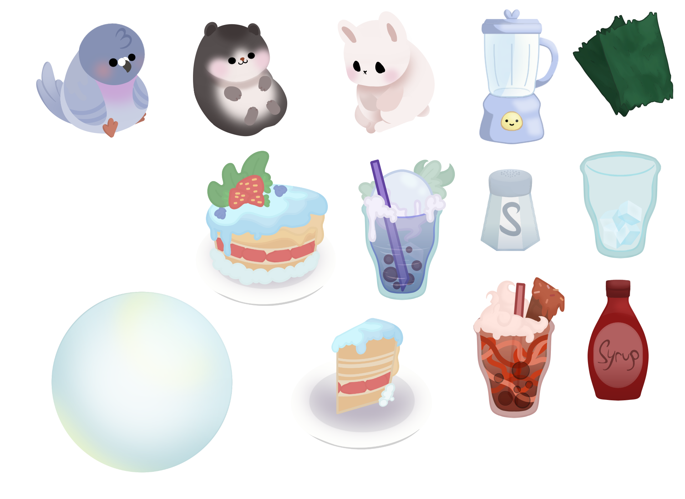
This was created by me for a game jam I participated in.
I've joined a few game jams in the past,
and I plan to join even more in the future.
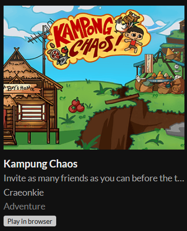
Everyone who was participating was tasked to make a game with the theme 'Singapore' in a week.
And my groupmates and I came up with this idea of gathering together for the kampung spirit.
My group consisted of 2 artists and 3 programmers.
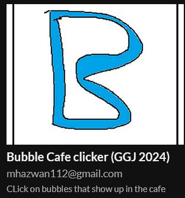
I was tasked with the art assets with another teammate. However, our art assets weren't used.
Our programmers couldn't finish the game and ended up submitting something else.
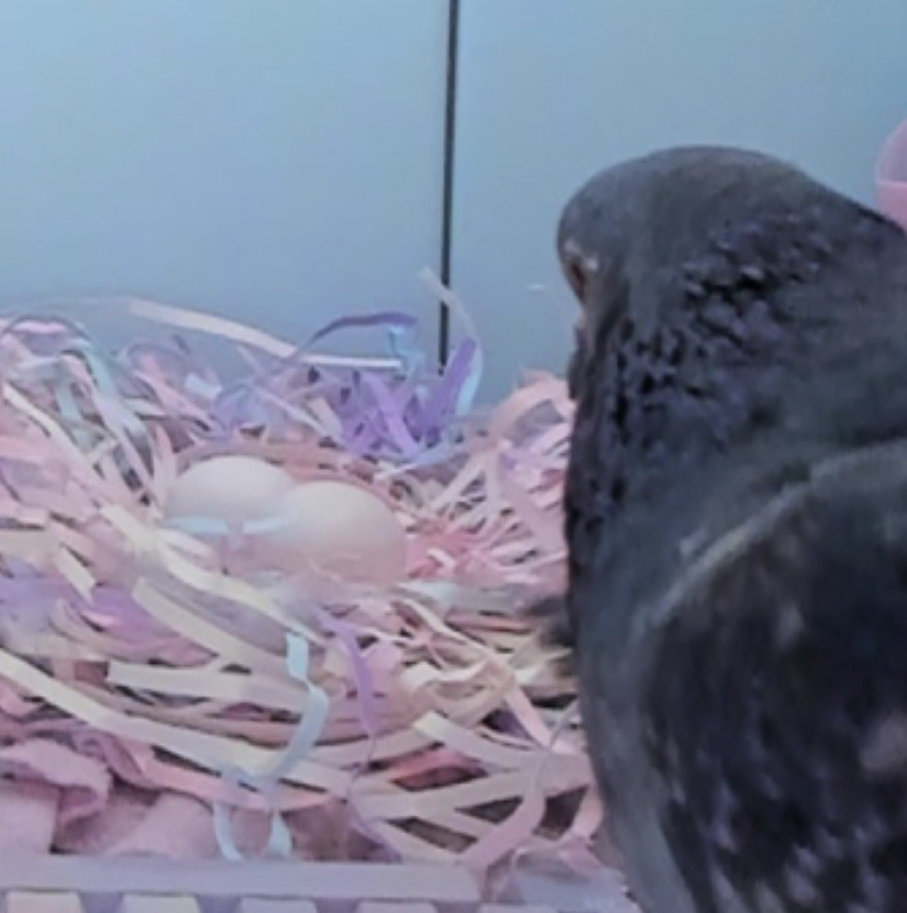
I plan to apply for Digipen.
However, I am happy to begin work when offered.
I also plan on working on all my solo projects
and join more game jams for experience.
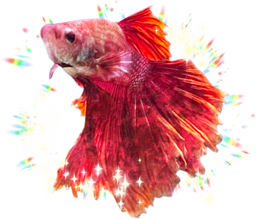
Thank you, Kevin Quach, for the persona themed buttons!
Persona ButtonsPersona font is by this website!
Persona Font GeneratorThis website is done by me!
Background is by the official Persona game!